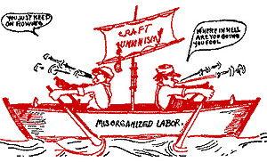

Chapter 1 - Why This Booklet
 The vast majority of railroad workers of all crafts are dissatisfied with their present form of organization, with leadership, and most of all, with their wages and working conditions.
The vast majority of railroad workers of all crafts are dissatisfied with their present form of organization, with leadership, and most of all, with their wages and working conditions.
In office and round-house, in switch-shanty and caboose, there is constant grumbling and "beefing." But obviously grumbling and beefing, though they may relieve the feelings, don't help much on payday.
Railroad men have long suffered low wages and deplorable conditions in the vain hope that the Brotherhoods, through legislation, demands or pleadings, would alleviate them. On a few the truth has dawned that the Brotherhoods are outmoded and can no longer protect our interests. They have become gigantic insurance and coffin clubs, and have increased membership dues and plastered assessments until the members groan under their burden.
Railroad workers have grown weary of oily promises that brought nothing but higher dues.
This restlessness showed itself from coast to coast until the noise made by the rank and file grew loud enough to reach the ears of the Great Brotherhood Chiefs and roused them from their lethargy.
Thus came the great run-arounds of the post-war era, the short strike of the Trainmen and Engineers in 1946, and the threatened strike of the other three operating crafts in 1948, the ugly maneuvers and talks of deals with the President to make sure that those crafts that fought would not be rewarded better than those that didn't fight. The results have been inadequate wages, and the application of pattern increases to an obsolete wage structure, leaving railroad workers the only organized workers who don't get overtime pay for all overtime work, who have to tolerate violation of the Supreme Court ruling that all workers should be paid for all time they must spend on the employer's premises.
In desperation a few dauntless and progressive rails, recognizing the true situation, cast about them for a way out of the dilemma. They also possessed the foresight to see that old or new administration is pledged to destroy organized labor as it has existed, and that the few gains made in the past half century are in danger and the chains of poverty and want may be restored.
They knew what they wanted and needed: An Industrial Union, one free from insurance rackets and politics. They also knew that a labor union is an organization formed by wage workers to serve their interests as wage workers. Their interest must be to secure an adequate wage, reasonable hours and good working conditions.
A careful study convinced them that economic solidarity was essential to winning their objectives and that for the union to try steering the political preferences of its members disrupts their union solidarity based upon uniform economic interests, because of the variety of political preferences of the members.
In their search for the right sort of union, they discovered and settled upon the Industrial Workers of the World, as the only union in the United States that has these desirable and necessary qualities.
After much consideration, inquiry and careful perusal of I. W .W .history, theories and precepts they were amazed to learn that the organization was founded in 1905 and has functioned ever since (over 43 years) without a labor blemish against its record.
A truly American organization formed by Americans in America to cope with American workers' problems.
It has won many strikes, conditions and other benefits for the workers and has never scabbed or crossed a picket line.
In the light of all this the rails believe that this organization is the final answer as it meets with the requirements of the definition of a labor union and offers a solution to all workers' problems. Encouraged thus, they contacted the nearest I. W. W. headquarters and made a plea for inclusion of the railroad workers.
While they might be a little late in realizing all of this, it is sincerely hoped that it will prove timely.
The I. W. W. chart includes ALL railroad workers from the section men upwards and is numbered and known as Railroad Workers Industrial Union No. 520.
Although young as yet having started only a couple of months ago we have built a tremendous following in the short time.
Of course many rail workers are not as yet acquainted with the facts and many have not heard of it, hence this little booklet which is intended to serve that purpose. It discusses some of the facts, problems and a partial list of proposed tentative demands.